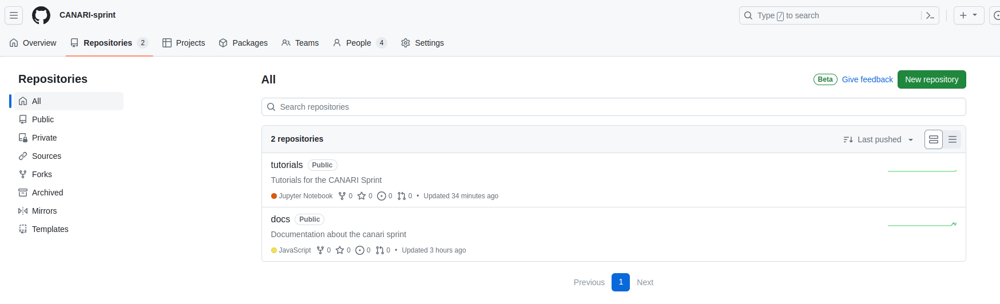
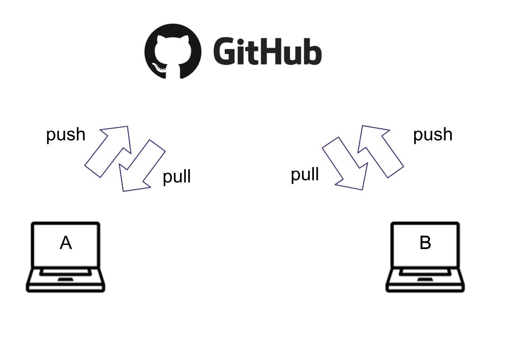

Git Setup and Basics
About Git and GitHub
Git is a popular version control system that is the foundation of most open source software development. You are not required to be a Git pro in advance of this event, but come prepared to learn a lot about it! GitHub is a hosting service for Git repositories, enabling us to share code across teams in a web environment.
We will use Git and GitHub for collaborative work.
Git Installation
- Windows
- Install Git for Windows from this link. For more setup details follow these instructions
- Mac OS
- Download the git installer and run it.
- Linux (Debian/Ubuntu):
sudo apt install git-all
To test, open the terminal (on Windows, Git Bash) and setup your username and email:
git config --global user.name "your username"
git config --global user.email "your email"
Getting started with Bash terminal
During the CANARI-Sprint week it will be useful to know how to navigate between files from the command line. If you are not familiar with the linux shell commands, you can review the first three sections of this Software Carpentry Shell Novice lesson. On Windows, use the Git Bash terminal to run these commands.
Terminal (command line) text editor
When working on the command line (the terminal or shell), it is often handy to modify file content directly from there. For that you can use a command line editor such as nano. On Mac and Linux it is usually pre-installed, and on Windows it is installed when you install Git (see here for more information about nano and its configuration). Test your installation by opening a terminal and running nano --version. If it works you can link your git configuration with nano:
git config --global core.editor "nano -w"
Git steps and workflows
1. Create a project repository
On your own or someone in your project group (preferably one who has done it before), create a repository for the project under the CANARI-sprint organization, https://github.com/CANARI-sprint

Click New and follow the steps: check yes to create a README.md file.
- Format project name as
proj-myprojectname(you can change the name later), wheremyprojectnameis a brief name for your project - Invite others to the repo:
Settings -> Collaborators- Note to collaborators: you will receive an invitation to your email associated with github.com. If you cannnot find it look for the
bellnotifications on the top right of the website.
2. Clone the repository
Each participant should clone the repository so they have their copy on their JupyterHub account space (and locally in the participant's computer, if desired). Navigate through the terminal to the folder where you want to keep CANARI-Sprint work (cd path_to_canari-sprint-work).
git clone https://github.com/CANARI-Sprint/proj-myprojectname.git
This will create a new folder called proj-myprojectname. Navigate (cd) to this new folder.
3. Update the README with your name
Open the README.md file with your favorite editor and create a new section header. Under this section add your name. Then add this change, commit it to the local repository, and push it so that it appears on the origin GitHub repository.
git add README.md
git commit -m "Adding new name to README.md"
git push origin
Make sure your change appears online.
Remember to run git status to observe the changes made into your repository. Pay attention to the colors. To see the changes in the files run git diff.
4. Update your local repository (local clone) with the changes of your collaborators
git pull origin main
Short names for repositories:: Remember origin is just a short name of the web address of the repository.
To see what is hidden in origin: git remote -v
To continue practicing these steps, make more changes to the title and the description of the project.

Ran into a problem? !ATTENTION
When working with several people sometimes you
- Cannot push because changes have been made that have not been incorporated: need to first pull
- When pulling you arrive into a merge conflict: need to resolve the conflict manually
#### 5. Resolving the merge conflict
```bash
git status
You will see the file(s) which caused the merge conflict in green.
Open it and detect the conflict by the special format:
<<<<<<< HEAD
my text
=======
somebody else's text
>>>>>>> 35ab35436
Decide which changes you want to keep, and modify the file so it looks as you wish directly from the editor. Remove the unnecessary characters. Add, commit and push the changes.
git add README.md
git commit -m "resolving merge conflict"
git push origin main
You can continue working on as usual.
Remember to pull often and push small changes ... to avoid messing with complicated merges and keep your repo up-to-date.
Troubleshooting
Deleting files
git rm filename.txt
rm filename.txt
Note: git rm just removes the file from git, to delete the file completely use the bash rm command after that.
Reverting to the previous commit
git revert HEAD
Note: Your files in the local repo will still be there.
References and Resources
Git and GitHub are very powerful tools but no doubt the learning curve is steep. Learning is an iterative process so below we list some resources which can help you be better prepared:
- git-novice - Software Carpentry Lesson (3 hours with exercises)
- Setting Up Git - Software Carpentry Lesson
- Atlassian Tutorials - Version Control
- An excellent guide to the Forking Git Workflow: Step-by-step guide to contributing on GitHub
- What is GitHub? (3:45 min)
- GitHub Learning Lab: practice with a bot! (On your own pace)
- An interactive Git Tutorial: the tool you didn’t know you needed. From personal workflows to open collaboration
- GeoHackWeek 2019 tutorial: Getting started with Git
- ICESAT-2HackWeek intro-jupyter-git repo, with several notebooks going into a lot of detail.